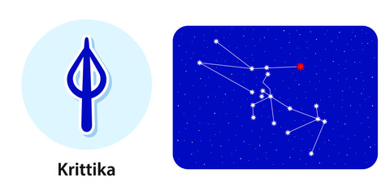

Nakshatra Krittika
Krittika Nakshatra
Characteristics male
The man born in Krittika Nakshatra has a thirst for knowledge yet is impatient in life. He has a tendency to do everything at once and in doing so, sometimes ends up messing up things for himself. Yet, the male is good with advice and thus is a great friend or guide to have. Yet, even as a friend, you are not allowed to suggest or prohibit him from doing his own thing as he wouldn't like it. The native born in Krittika Nakshatra has an exceptional ability to make money and is business-minded. However, to progress in life, he must be determined to take risks.Profession male
As far as the profession goes, the male born in Krittika Nakshatra has a natural inclination to stay away from home for work purposes. In fact, these people do well in life if they stay away from family for professional reasons. The natural and most-suited profession for these males is business related to yarn export, pharmaceuticals, and handicraft items. When it comes to a desk job, engineering, apart from anything related to medical, bodes well for these natives.Compatibility male
The phrase, 'behind every successful man, there is a strong woman’, bodes well for the males born in the Kritika Nakshatra as they usually get lucky once they get married. Both the wife and the male can do a lot together to make their life fulfilling. However, the life of the couple is not free of chances of separation, which may usually be the result of over-indulgence of the male in his profession. In love, there is a positive period for these males between 25 and 35 years of age.Health male
The male natives born in Krittika Nakshatra generally neglect their health. They have a natural tendency to not care a lot about their diet and tend to be lazy. These people must be careful of problems that can lead to issues in teeth, weak eyesight or accidents.Characteristics female
The female born in Krittika Nakshatra reeks off a lot of emotions and is a bit sensitive in character. The quality is something that she needs to tame well, as if she doesn't, others may use the same against her. The emotional character of the woman here makes her caring and someone who anyone can trust. Besides, she is also quarrelsome and tends to throw her weight around both at her workplace and her home. Despite the odds, a blend of both traditional and modern makes her a desired person among all generations.Profession female
As far as the profession goes, if the female born in Krittika Nakshatra is well educated, then the most suitable professions for her are administrative work, especially with the government, the role of a teacher, doctor or even an engineer. If not educated, the female may end up being a housewife yet will have a natural thirst for doing something with her life.Compatibility female
There is always an impending chance of separation in marriage in the life of a female born in Kritika Nakshatra. Hence, the female - and her husband - will have to work harder to enjoy the bliss of a happy marriage. The hiccups in marriage are majorly due to the female's inability to understand the intentions of her relatives and husband's family correctly. She tends to have high expectations, which, if not fulfilled, may brew chances of separation.Health female
The female natives born in Krittika Nakshatra are stronger physically. But mentally, they may have to deal with stress and tension. The problems of tuberculosis may also hinder the progress of these women, hence they must not ignore any such related symptoms.Krittika Nakshatra Padas
Pada 1st: The first pada of this Krittika Nakshatra falls in the Sagittarius Navamsa and is ruled by Jupiter. The natives born in this quarter have the blessing of the Sun, Mars, Jupiter and Ketu, the planets which allow these natives an abundance of willpower, strength and stamina.
Pada 2nd: The second pada of this Krittika Nakshatra falls in the Capricorn Navamsa and is ruled by Saturn. The people born in this pada have a natural tendency of being materialistic and thus might overspend.
Pada 3rd: The third pada of this Krittika Nakshatra falls in the Aquarius Navamsa and, again, is ruled by Saturn. The people born in this Pada seek to indulge in a lot of pleasures, which may get them into financial troubles.
Pada 4th: The fourth pada of this Krittika Nakshatra falls in the Pisces Navamsa and is ruled by Jupiter. People born under pada 4 are intelligent, educated, and have a bent towards religious ways of life and habits
Features of Krittika Nakshatra
Symbol- Knife or razor
Ruling planet- Sun
Gender- Female
Gana- Rakshasa
Guna- rajas/rajas/sattva
Presiding Deity- Agni
Animal- Female Sheep
Indian Zodiac- 26°40′ Mesha – 10° Vrishabha